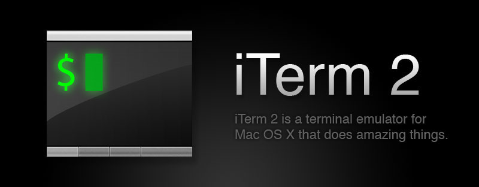
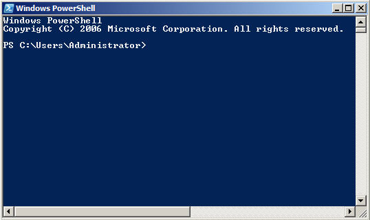

Intro to Build Steps and Preprocessing
Node - Gulp - Grunt - Jade - Stylus
Created by Francisco G.
Step 1 - Install Node
Node is available for Mac, Linux, and Windows.
Just go to nodejs.org and click on install.
Node Package Manager

Get comfortable with
the command line
Because you'll be using it a lot.

Super Duper Basic Commands
- cd = change directory
- mkdir = make a new directory
- cp = copy
- mv = move
- rm = remove, aka delete (can not undelete!)
- rm -rf folder = this is how you delete a folder and all its subfolers (again, can't undo)
- Also, tab completion is your friend
On a Mac?
Mac comes with the "Terminal" program which is fine
But I would recommend downloading iTerm2, it's free
Why? allows tabs and you can change the colors a lot easier and it's just prettier and better.
Stuck with Windows?
You can use Powershell, which comes pre-installed with Windows since XP
But I'd also recommend installing Git for Windows
and using Git Bash that it comes with
What is a Build Tool?
aka Task Runner
Task runners let you perform a bunch of tasks all at once saving you the hassle of having to manually do each one separately
Typical Tasks
Lets take Javascript for example.
- Lint it (check it for errors) usint JSHint or JSLint
- Compile it if you're using Coffeescript, Typescript, etc
- Concatenate many files into one
- Minify (aka Uglify) to reduce file size
- Save it to a destination directory
I choo-choo-choose Gulp
Why Gulp?
Global State
Set data-state="something" on a slide and "something"
will be added as a class to the document element when the slide is open. This lets you
apply broader style changes, like switching the background.
Slide Backgrounds
Set data-background="#007777" on a slide to change the full page background to the given color. All CSS color formats are supported.
Image Backgrounds
<section data-background="image.png">Repeated Image Backgrounds
<section data-background="image.png" data-background-repeat="repeat" data-background-size="100px">Clever Quotes
These guys come in two forms, inline:
“The nice thing about standards is that there are so many to choose from”
and block:
“For years there has been a theory that millions of monkeys typing at random on millions of typewriters would reproduce the entire works of Shakespeare. The Internet has proven this theory to be untrue.”
Pretty Code
function linkify( selector ) {
if( supports3DTransforms ) {
var nodes = document.querySelectorAll( selector );
for( var i = 0, len = nodes.length; i < len; i++ ) {
var node = nodes[i];
if( !node.className ) {
node.className += ' roll';
}
}
}
}
Courtesy of highlight.js.
Intergalactic Interconnections
You can link between slides internally, like this.
Fragmented Views
Hit the next arrow...
... to step through ...
any type- of view
- fragments
Fragment Styles
There's a few styles of fragments, like:
grow
shrink
roll-in
fade-out
highlight-red
highlight-green
highlight-blue
current-visible
highlight-current-blue
Spectacular image!

Export to PDF
Presentations can be exported to PDF, below is an example that's been uploaded to SlideShare.
Take a Moment
Press b or period on your keyboard to enter the 'paused' mode. This mode is helpful when you want to take distracting slides off the screen during a presentation.